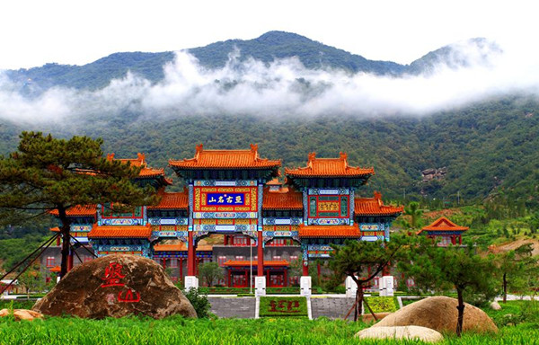
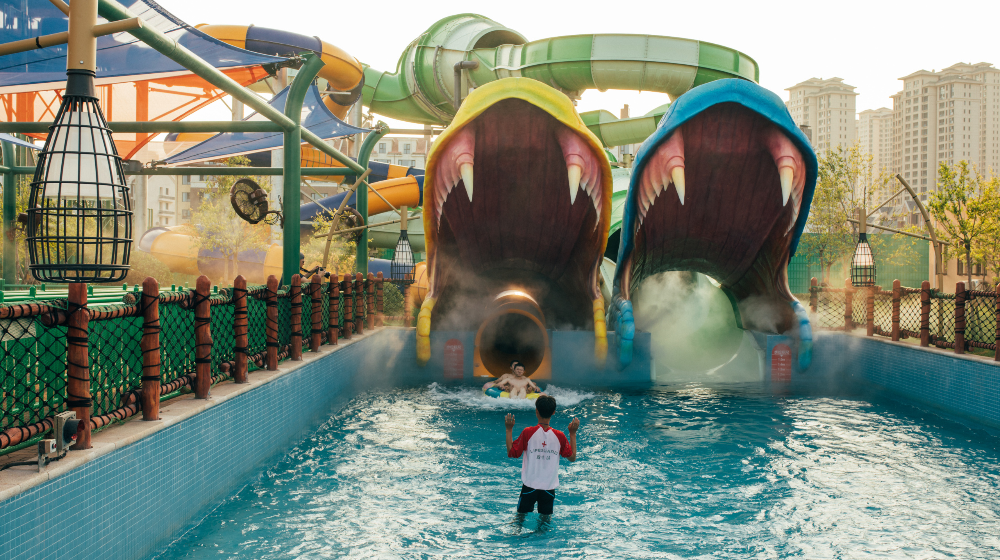

Tianjin (North China) - Where East Meets West by the Sea



Nestled along the Bohai Sea, Tianjin is a North China gem just 30 minutes by high-speed train from Beijing—and it’s a city of delightful contrasts. Walk its streets, and you’ll stumble upon red-brick European villas from its days as a foreign concession, right next to traditional hutongs where vendors sell steaming goubuliu baozi (steamed pork buns). The Haihe River winds through its heart, lighting up at night with glowing bridges and waterfront cafes, while ancient temples like Dule Temple stand as quiet testaments to its 600-year history. Whether you’re savoring crispy fried dough twists, cruising the river at dusk, or exploring cobblestone squares in the Italian Concession, Tianjin blends old-world charm and cross-cultural flair in every corner.
Tianjin’s history shines brightest in its iconic sites. The Ancient Culture Street, a 600-meter stretch of traditional Chinese architecture, feels like a step back in time—here, you can visit Tianhou Palace (a temple honoring the sea goddess, built in 1326), watch artisans carve clay figurines, and listen to folk acrobatics shows on weekends. A short drive away, the Italian Concession Area is a little slice of Europe: Marco Polo Square’s fountain, pastel-colored villas, and outdoor cafes make it perfect for afternoon strolls and photos. For a deeper dive into ancient history, Dule Temple (built in 984 AD) is a must—it’s one of China’s oldest preserved Buddhist temples, home to a 10-meter-tall wooden Guanyin statue that’s stood for over a millennium.

When you want to escape the city buzz, Tianjin’s natural spots offer calm and beauty. A cruise along the Haihe River is a highlight—especially at night, when bridges like Jiefang Bridge glow with neon lights and the European-style buildings along the banks reflect in the water. Panshan Mountain, 120 kilometers from the city center, is a scenic retreat with pine forests, waterfalls, and ancient temples; hike to its peak for sweeping views of the surrounding countryside, or relax by Yunmen Temple’s tranquil ponds. Back in the city, Tianjin Water Park (the largest urban park here) is ideal for families—rent a paddle boat on its three lakes, walk through lotus-filled gardens, or have a picnic under willow trees on a sunny day.
No trip to Tianjin is complete without tasting its famous snacks. Goubuliu Baozi, the city’s most iconic food, are soft steamed buns filled with juicy minced pork and broth—legend says they were invented by a boy named “Goubuliu” (meaning “dog doesn’t care”) who was so focused on making buns, he ignored his dog! Erduoyan Fried Dough Twists are another must: crispy, twisted sticks coated in sesame or sugar, perfect for munching on the go. And for something heartier, try mahua (fried dough twists) with a savory twist—sold at street stalls, they’re crunchy outside, fluffy inside, and pair great with a cup of hot tea.

Travel Tips for Chongqing
Best Time to Visit:
Tip 1: Spring (March–May) and autumn (September–November) are ideal. Temperatures range from 10–22°C (50–72°F), with mild weather and fewer crowds. Summer (30+°C/86+°F) is hot but great for river cruises; winter (0–10°C/32–50°F) is cool and quiet.
Transportation:
Tip 1: Take a high-speed train from Beijing South Station to Tianjin (30 minutes, 54–65 CNY). In the city, use bike-sharing apps (cheap and convenient) or the subway (covers major spots like Ancient Culture Street and the Water Park); taxis start at 8 CNY for short trips.
Essential Tips:
Tip 1: Try goubuliu baozi at the original shop on Ancient Culture Street (look for the long line!).
Tip 2: Visit the Italian Concession in the afternoon—sunlight makes the villas look even more vibrant.
Tip 3: Bring comfortable shoes for walking—many historic areas are best explored on foot.